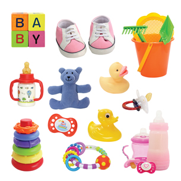

Module 6—Petrochemicals
Explore
There is plastic in almost everything around you. Plastics are polymers—macromolecules created by linking many smaller molecules. The small molecules that make up a polymer are called monomers. The process of joining monomers together is called polymerization.
polymer: a large molecule made by linking together many smaller molecules called monomers
monomer: a small molecule that links with many other similar molecules in an addition or condensation reaction to create a polymer
polymerization: the process of forming polymers from monomers through addition or condensation reactions
 Self-Check
Self-Check
In Lesson 1 of this module you organized diagrams of the chemical structures for different petrochemical compounds based on structural similarities. In this activity you will review those diagrams to learn more about polymers. Retrieve those diagrams now.
Step 1: Sort through the diagrams and find the molecules with the term “poly” in their name.
Step 2: Sort through the remaining diagrams. For each polymer identified in Step 1, find the card that contains the corresponding monomer.
SC 1. Prepare a chart with two columns. The left-hand column should be titled “Polymer” and the right-hand column should be titled “Corresponding Monomer.” Complete the chart based on your work in Steps 1 and 2.
SC 2. Identify the similarity between all the monomers listed in your table. Suggest a mechanism by which the monomers can be joined to become a polymer.
SC 3. Sort through the remaining cards and identify any other substances that could be monomers. Justify why you chose these molecules.
Self-Check Answers
Contact your teacher if your answers vary significantly from the answers provided here.
SC 1.
Polymer |
Corresponding Monomer |
|---|---|
polyvinyl chloride |
vinyl chloride |
polystyrene |
styrene |
polypropylene |
propene |
polyvinyl acetate |
vinyl acetate |
SC 2. All monomers have a double bond between adjacent carbon atoms. The monomers would combine through an addition reaction in which the double bond is broken and each atom is saturated by bonding to another atom (in this case, the carbon atom of another monomer with a free-bonding electron).
SC 3. Other possible monomers are ethylene and butadiene. Both of these substances have double bonds and could participate in addition reactions with other monomers.
As you have seen from this Self-Check activity, there are many kinds of polymers. Polymers made from petrochemicals are often called plastics because they have the ability to be moulded. You may be familiar with other kinds of polymers, like polyester, which will be discussed in Lesson 6. As you may have guessed, polyesters have a different chemistry than addition polymers, the topic of this lesson.
Read
Read pages 445–447 in the textbook to learn more about addition reactions—one of the mechanisms by which addition polymers can be formed.
Self-Check
SC 4. Complete “Practice” questions 1–8 on page 448 of the textbook.
Discuss

© Elena Schweitzer/shutterstock
Plastics form part of almost every product you use, and they have added convenience to many areas of your life. Cars, computers, cell phones, water bottles, and baby bottles all contain plastic. Even most of your food and toiletries come in plastic containers. As a result, even with recycling programs, many landfills are full of plastic.
D 1. Think about everything you have learned so far in Module 6. Do you think the way society uses plastics is a good use of the natural resource from which plastics originate? Write a few paragraphs to provide your opinion on this question.
Post your response to the discussion area for your class. Read the responses of at least two other students. Identify similarities and differences in the responses you read. Save a copy of your opinion and the similarities and differences you identified in your course folder.